Appendix C — Queueing Theory
Learning Objectives
To be able understand basic queueing theory notation
To be able to compute queueing results for single queue situations
To be able to identify and apply standard queueing models
Many real-life situations involve the possible waiting of entities (e.g. customers, parts, etc.) for resources (e.g. bank tellers, machines, etc.). Systems that involve waiting lines are called queuing systems. This appendix introduces analytical (formula-based) approaches to modeling the performance of these systems.
Once the performance of the system is modeled, the design of the system to meet operational requirements becomes an important issue. For example, in the simple situation of modeling a drive through pharmacy, you might want to determine the number of waiting spaces that should be available so that arriving customers can have a high chance of entering the line. In these situations, having more of the resource (pharmacist) available at any time will assist in meeting the design criteria; however, an increase in a resource typically comes at some cost. Thus, design questions within queuing systems involve a fundamental trade-off between customer service and the cost of providing that service.
To begin the analysis of these systems, a brief analytical treatment of the key modeling issues is presented. Analytical results are available only for simplified situations; however, the analytical treatment will serve two purposes. First, it will provide an introduction to the key modeling issues, and second, it can provide approximate models for more complicated situations. The purpose of this appendix is not to provide a comprehensive treatment of queueing theory for which there are many excellent books already. The purpose of this appendix is to provide an introduction to this topic for persons new to simulation so that they can better understand their modeling and analysis of queueing systems. This appendix also serves as a reference for the formulas associated with these models to facilitate their use in verifying and validating simulation models.
C.1 Single Line Queueing Stations
Chapter 4 presented the pharmacy model and analyzed it with a single server, single queue queueing system called the M/M/1. This section shows how the formulas for the M/M/1 model are derived and discusses the key notation and assumptions of analytical models for systems with a single queue. In addition, you will also learn how to simulate variations of these models.
In a queueing system, there are customers that compete for resources by moving through processes. The competition for resources causes waiting lines (queues) to form and delays to occur within the customer’s process. In these systems, the arrivals and/or service processes are often stochastic. Queueing theory is a branch of mathematical analysis of systems that involve waiting lines in order to predict (and control) their behavior over time. The basic models within queueing theory involve a single line that is served by a set of servers. Figure C.1 illustrates the major components of a queueing system with a single queue feeding into a set of servers.
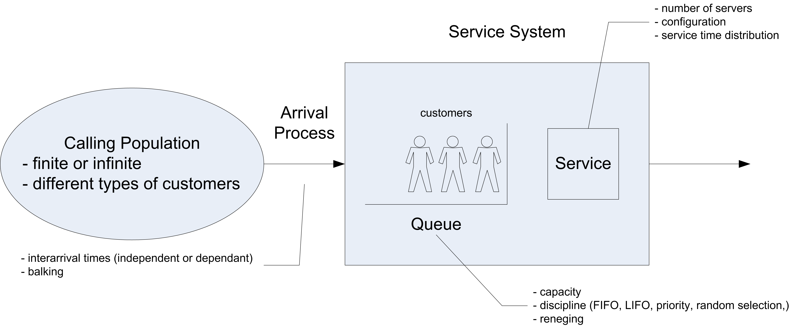
In queueing theory the term customer is used as a generic term to describe the entities that flow and receive service. A resource is a generic term used to describe the components of the system that are required by a customer as the customer moves through the system. The individual units of the resource are often called servers. In Figure C.1, the potential customers can be described as coming from a calling population. The term calling population comes from the historical use of queueing models in the analysis of phone calls to telephone trunk lines. Customers within the calling population may arrive to the system according to an arrival process. In the finite population case, the arrival rate that the system experiences will quite naturally decrease as customers arrive since fewer customers are available to arrive if they are within the system.
In the infinite calling population case, the rate of arrivals to the system does not depend upon on how many customers have already arrived. In other words, there are so many potential customers in the population that the arrival rate to the system is not affected by the current number of customers within the system. Besides characterizing the arrival process by the rate of arrivals, it is useful to think in terms of the inter-arrival times and in particular the inter-arrival time distribution. In general, the calling population may also have different types of customers that arrive at different rates. In the analytical analysis presented here, there will only be one type of customer.
The queue is that portion of the system that holds waiting customers. The two main characteristics for the queue are its size or capacity, and its discipline. If the queue has a finite capacity, this indicates that there is only enough space in the queue for a certain number of customers to be waiting at any given time. The queue discipline refers to the rule that will be used to decide the order of the customers within the queue. A first-come, first-served (FCFS) queue discipline orders the queue by the order of arrival, with the most recent arrival always joining the end of the queue. A last-in, first out (LIFO) queue discipline has the most recent arrival joining the beginning of the queue. A last-in, first out queue discipline acts like a stack of dishes. The first dish is at the bottom of the stack, and the last dish added to the stack is at the top of the stack. Thus, when a dish is needed, the next dish to be used is the last one added to the stack. This type of discipline often appears in manufacturing settings when the items are placed in bins, with newly arriving items being placed on top of items that have previously arrived.
Other disciplines include random and priority. You can think of a random discipline modeling the situation of a server randomly picking the next part to work on (e.g. reaches into a shallow bin and picks the next part). A priority discipline allows the customers to be ordered within the queue by a specified priority or characteristic. For example, the waiting items may be arranged by due-date for a customer order.
The resource is that portion of the system that holds customers that are receiving service. Each customer that arrives to the system may require a particular number of units of the resource. The resource component of this system can have 1 or more servers. In the analytical treatment, each customer will required only one server and the service time will be governed by a probability distribution called the service time distribution. In addition, for the analytical analysis the service time distribution will be the same for all customers. Thus, the servers are all identical in how they operate and there is no reason to distinguish between them. Queueing systems that contain servers that operate in this fashion are often referred to as parallel server systems. When a customer arrives to the system, the customer will either be placed in the queue or placed in service. After waiting in line, the customer must select one of the (identical) servers to receive service. The following analytical analysis assumes that the only way for the customer to depart the system is to receive service.
C.1.1 Queueing Notation
The specification of how the major components of the system operate gives a basic system configuration. To help in classifying and identifying the appropriate modeling situations, Kendall’s notation ((Kendall 1953)) can be used. The basic format is:
arrival process / service process / number of servers / system capacity / size of the calling population / queue discipline
For example, the notation M/M/1 specifies that the arrival process is Markovian (M) (exponential time between arrivals), the service process is Markovian (M) (exponentially distributed service times, and that there is 1 server. When the system capacity is not specified it is assumed to be infinite. Thus, in this case, there is a single queue that can hold any customer that arrives. The calling population is also assumed to be infinite if not explicitly specified. Unless otherwise noted the queue discipline is assumed to be FCFS.
Traditionally, the first letter(s) of the appropriate distribution is used to denote the arrival and service processes. Thus, the case LN/D/2 represents a queue with 2 servers having a lognormally (LN) distributed time between arrivals and deterministic (D) service times. Unless otherwise specified it is typically assumed that the arrival process is a renewal process, i.e. that the time between arrivals are independent and identically distributed and that the service times are also independent and identically distributed.
Also, the standard models assume that the arrival process is independent of the service process and vice a versa. To denote any distribution, the letter G for general (any) distribution is used. The notation (GI) is often used to indicate a general distribution in which the random variables are independent. Thus, the G/G/5 represents a queue with an arrival process having any general distribution, a general distribution for the service times, and 5 servers. Figure C.2 illustrates some of the common queueing systems as denoted by Kendall’s notation.
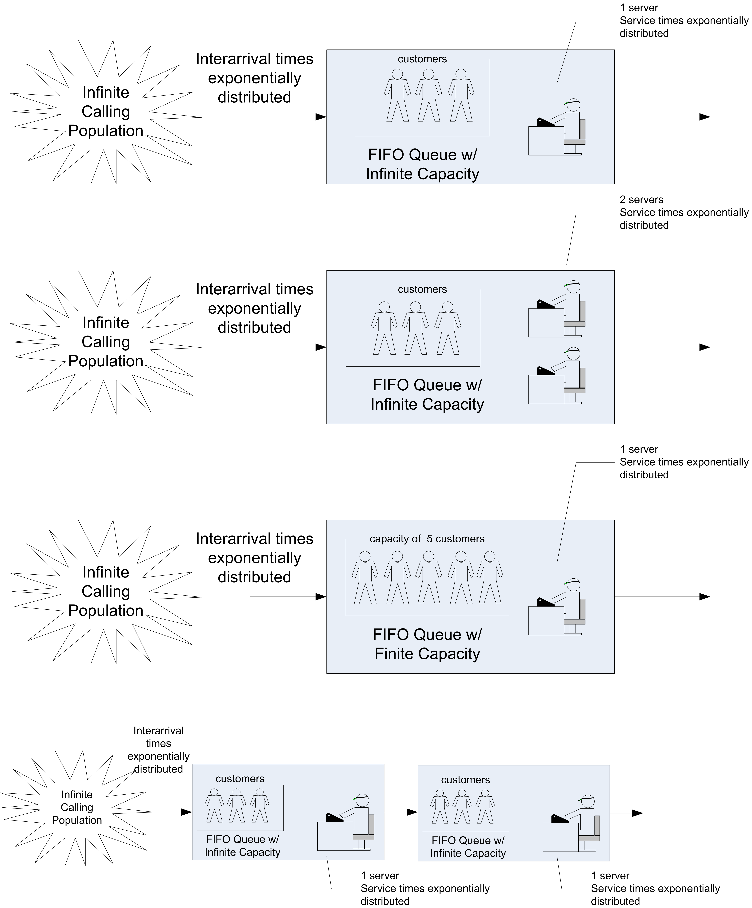
There are a number of quantities that form the basis for measuring the performance of queueing systems: - The time that a customer spends waiting in the queue: \(T_q\)
The time that a customer spends in the system (queue time plus service time): \(T\)
The number of customers in the queue at time \(t\): \(N_q(t)\)
The number of customers that are in the system at time t: \(N(t)\)
The number of customer in service at time \(t\): \(N_b(t)\)
These quantities will be random variables when the queueing system has stochastic elements. We will assume that the system is work conserving, i.e. that the customers do not exit without received all of their required service and that a customer uses one and only one server to receive service. For a work conserving queue, the following is true:
\[N(t) = N_q(t) + N_b(t)\]
This indicates that the number of customers in the system must be equal to the number of customers in queue plus the number of customers in service. Since the number of servers is known, the number of busy servers can be determined from the number of customers in the system. Under the assumption that each customer requires 1 server (1 unit of the resource), then \(N_b(t)\) is also the current number of busy servers. For example, if the number of servers is 3 and the number of customers in the system is 2, then there must be 2 customers in service (two servers that are busy). Therefore, knowledge of \(N(t)\) is sufficient to describe the state of the system. Because \(N(t) = N_q(t) + N_b(t)\) is true, the following relationship between expected values is also true:
\[E[N(t)] = E[N_q(t)] + E[N_b(t)]\]
If \(\mathit{ST}\) is the service time of an arbitrary customer, then it should be clear that:
\[E[T] = E[T_q] + E[\mathit{ST}]\]
That is, the expected system time is equal to the expected waiting time in the queue plus the expected time spent in service.
C.1.2 Little’s Formula
Chapter 4 presented time persistent data and computed time-averages. For queueing systems, one can show that relationships exist between such quantities as the expected number in the queue and the expected waiting time in the queue. To understand these relationships, consider Figure C.3 which illustrates the sample path for the number of customers in the queue over a period of time.
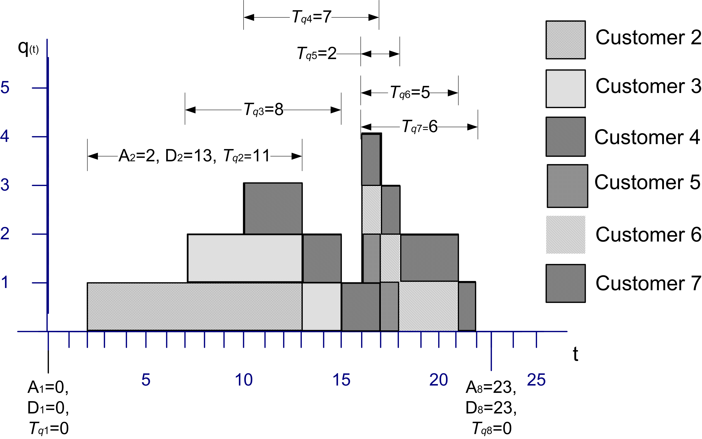
Let \(A_i; i = 1 \ldots n\) represent the time that the \(i^{th}\) customer enters the queue, \(D_i; i = 1 \ldots n\) represent the time that the \(i^{th}\) customer exits the queue, and \(T_{q_i}\) = \(D_i\) - \(A_i\) for \(i = 1 \ldots n\) represent the time that the \(i^{th}\) customer spends in the queue. Recall that the average time spent in the queue was:
\[\bar{T}_q = \frac{\sum_{i=1}^n T_{q_i}}{n} =\frac{0 + 11 + 8 + 7 + 2 + 5 + 6 + 0}{8} = \frac{39}{8} = 4.875\]
The average number of customers in the queue was:
\[\begin{aligned} \bar{L}_q & = \frac{0(2-0) + 1(7-2) + 2(10-7) + 3(13-10) + 2(15-13) + 1(16-15)}{25}\\ & + \frac{4(17-16) + 3(18-17) + 2(21-18) + 1(22-21) + 0(25-22)}{25} \\ & = \frac{39}{25} = 1.56\end{aligned}\]
By considering the waiting time lengths within the figure, the area under the sample path curve can be computed as:
\[\sum_{i=1}^n T_{q_i} = 39\]
But, by definition the area should also be:
\[\int_{t_0}^{t_n} q(t)\mathrm{d}t\]
Thus, it is no coincidence that the computed value for the numerators in \(\bar{T}_q\) and \(\bar{L}_q\) for the example is 39. Operationally, this must be the case.
Define \(\bar{R}\) as the average rate that customers exit the queue. The average rate of customer exiting the queue can be estimated by counting the number of customers that exit the queue over a period of time. That is,
\[\bar{R} = \frac{n}{t_n - t_0}\]
where \(n\) is the number of customers that departed the system during the time \(t_n - t_0\). This quantity is often called the average throughput rate. For this example, \(\bar{R}\) = 8/25. By combining these equations, it becomes clear that the following relationship holds:
\[\bar{L}_q = \frac{\int\limits_{t_0}^{t_n} q(t)\mathrm{d}t}{t_n - t_0} = \frac{n}{t_n - t_0} \times \frac{\sum_{i=1}^n T_{q_i}}{n} = \bar{R} \times \bar{T}_q\]
This relationship is a conservation law and can also be applied to other portions of the queueing system as well. In words the relationship states that:
Average number in queue = average throughput rate \(\times\) average waiting time in queue
When the service portion of the system is considered, then the relationship can be translated as:
Average number in service = average throughput rate \(\times\) average time in service
When the entire queueing system is considered, the relationship yields:
Average number in the system = average throughput rate \(\times\) average time in the system
These relationships hold operationally for these statistical quantities as well as for the expected values of the random variables that underlie the stochastic processes. This relationship is called Little’s formula after the queueing theorist who first formalized the technical conditions of its applicability to the stochastic processes within queues of this nature. The interested reader is referred to (Little 1961) and (Glynn and Whitt 1989) for more on these relationships. In particular, Little’s formula states a relationship between the steady state expected values for these processes.
To develop these formulas, define \(N\), \(N_q\), \(N_b\) as random variables that represent the number of customers in the system, in the queue, and in service at an arbitrary point in time in steady state. Also, let \(\lambda\) be the expected arrival rate so that \(1/\lambda\) is the mean of the inter-arrival time distribution and let \(\mu = 1/E[\mathit{ST}]\) so that \(E[\mathit{ST}] = 1/\mu\) is the mean of the service time distribution. The expected values of the quantities of interest can be defined as:
\[\begin{aligned} L & \equiv E[N] \\ L_q & \equiv E[N_q]\\ B & \equiv E[N_b]\\ W & \equiv E[T] \\ W_q & \equiv E[T_q]\end{aligned}\]
Thus, it should be clear that
\[\begin{aligned} L & = L_q + B \\ W & = W_q + E[\mathit{ST}]\end{aligned}\]
In steady state, the mean arrival rate to the system should also be equal to the mean through put rate. Thus, from Little’s relationship the following are true:
\[\begin{aligned} L & = \lambda W \\ L_q & = \lambda W_q\\ B & = \lambda E[\mathit{ST}] = \frac{\lambda}{\mu}\end{aligned}\]
To gain an intuitive understanding of Little’s formulas in this situation, consider that in steady state the mean rate that customers exit the queue must also be equal to the mean rate that customers enter the queue. Suppose that you are a customer that is departing the queue and you look behind yourself to see how many customers are left in the queue. This quantity should be \(L_q\) on average. If it took you on average \(W_q\) to get through the queue, how many customers would have arrived on average during this time? If the customers arrive at rate \(\lambda\) then \(\lambda\) \(\times\) \(W_q\) is the number of customers (on average) that would have arrived during your time in the queue, but these are the customers that you would see (on average) when looking behind you. Thus, \(L_q = \lambda W_q\).
Notice that \(\lambda\) and \(\mu\) must be given and therefore \(B\) is known. The quantity \(B\) represents the expected number of customers in service in steady state, but since a customer uses only 1 server while in service, \(B\) also represents the expected number of busy servers in steady state. If there are \(c\) identical servers in the resource, then the quantity, \(B/c\) represents the fraction of the servers that are busy. This quantity can be interpreted as the utilization of the resource as a whole or the average utilization of a server, since they are all identical. This quantity is defined as:
\[\rho = \frac{B}{c} = \frac{\lambda}{c \mu}\]
The quantity, \(c\mu\), represents the maximum rate at which the system can perform work on average. Because of this \(c\mu\) can be interpreted as the mean capacity of the system. One of the technical conditions that is required for Little’s formula to be applicable is that \(\rho < 1\) or \(\lambda < c \mu\). That is, the mean arrival rate to the system must be less than mean capacity of the system. This also implies that the utilization of the resource must be less than 100%.
The queueing system can also be characterized in terms of the offered load. The offered load is a dimensionless quantity that gives the average amount of work offered per time unit to the \(c\) servers. The offered load is defined as: \(r = \lambda/\mu\). Notice that this can be interpreted as each customer arriving with \(1/\mu\) average units of work to be performed. The steady state conditions thus indicate that \(r < c\). In other words, the arriving amount of work to the queue cannot exceed the number of servers. These conditions make sense for steady state results to be applicable, since if the mean arrival rate was greater than the mean capacity of the system, the waiting line would continue to grow over time.
C.1.3 Deriving Formulas for Markovian Single Queue Systems
Notice that with \(L = \lambda W\) and the other relationships, all of the major performance measures for the queue can be computed if a formula for one of the major performance measures (e.g. \(L\), \(L_q\), \(W\), or \(W_q\)) are available. In order to derive formulas for these performance measures, the arrival and service processes must be specified.
This section shows that for the case of exponential time between arrivals and exponential service times, the necessary formulas can be derived. It is useful to go through the basic derivations in order to better understand the interpretation of the various performance measures, the implications of the assumptions, and the concept of steady state.
To motivate the development, let’s consider a simple example. Suppose you want to model an old style telephone booth, which can hold only one person while the person uses the phone. Also assume that any people that arrive while the booth is in use immediately leave. In other words, nobody waits to use the booth.
For this system, it is important to understand the behavior of the stochastic process \(N(t); t \geq 0\), where \(N(t)\) represents the number of people that are in the phone booth at any time \(t\). Clearly, the possible values of \(N(t)\) are 0 and 1, i.e. \(N(t) \in \lbrace 0, 1 \rbrace\). Developing formulas for the probability that there are 0 or 1 customers in the booth at any time \(t\), i.e. \(P_i(t) = P\lbrace N(t) = i\rbrace\) will be the key to modeling this situation.
Let \(\lambda\) be the mean arrival rate of customers to the booth and let \(\mathit{ST} = 1/\mu\) be the expected length of a telephone call. For example, if the mean time between arrivals is 12 minutes, then \(\lambda\) = 5/hr, and if the mean length of a call is 10 minutes, then \(\mu\) = 6/hr. The following reasonable assumptions will be made:
The probability of a customer arriving in a small interval of time, \(\Delta t\), is roughly proportional to the length of the interval, with the proportionality constant equal to the mean rate of arrival, \(\lambda\).
The probability of a customer completing an ongoing phone call during a small interval of time is roughly proportional to the length of the interval and the proportionality constant is equal to the mean service rate, \(\mu\).
The probability of more than one arrival in an arbitrarily small interval, \(\Delta t\), is negligible. In other words, \(\Delta t\), can be made small enough so that only one arrival can occur in the interval.
The probability of more than one service completion in an arbitrarily small interval, \(\Delta t\), is negligible. In other words, \(\Delta t\), can be made small enough so that only one service can occur in the interval.
Let \(P_0(t)\) and \(P_1(t)\) represent the probability that there is 0 or 1 customer using the booth, respectively. Suppose that you observe the system at time \(t\) and you want to derive the probability for 0 customers in the system at some future time, \(t + \Delta t\). Thus, you want, \(P_0(t + \Delta t)\).
For there to be zero customers in the booth at time \(t + \Delta t\), there are two possible situations that could occur. First, there could have been no customers in the system at time \(t\) and no arrivals during the interval \(\Delta t\), or there could have been one customer in the system at time \(t\) and the customer completed service during \(\Delta t\). Thus, the following relationship should hold:
\[\begin{aligned} \lbrace N(t + \Delta t) = 0\rbrace = & \lbrace\lbrace N(t) = 0\rbrace \cap \lbrace \text{no arrivals during} \; \Delta t\rbrace\rbrace \cup \\ & \lbrace\lbrace N(t) = 1\rbrace \cap \lbrace \text{service completed during} \; \Delta t\rbrace \rbrace\end{aligned}\]
It follows that:
\[P_0(t + \Delta t) = P_0(t)P\lbrace\text{no arrivals during} \Delta t\rbrace + P_1(t)P\lbrace\text{service completed during} \Delta t\rbrace\]
In addition, at time \(t + \Delta t\), there might be a customer using the booth, \(P_1(t + \Delta t)\). For there to be one customer in the booth at time \(t + \Delta t\), there are two possible situations that could occur. First, there could have been no customers in the system at time \(t\) and one arrival during the interval \(\Delta t\), or there could have been one customer in the system at time \(t\) and the customer did not complete service during \(\Delta t\). Thus, the following holds:
\[P_1(t + \Delta t) = P_0(t)P\lbrace\text{1 arrival during} \; \Delta t\rbrace + P_1(t)P\lbrace\text{no service completed during} \; \Delta t\rbrace\]
Because of assumptions (1) and (2), the following probability statements can be used:
\[\begin{aligned} P \lbrace \text{1 arrival during} \; \Delta t \rbrace & \cong \lambda \Delta t\\ P \lbrace \text{no arrivals during} \; \Delta t \rbrace &\cong 1- \lambda \Delta t \\ P \lbrace \text{service completed during} \; \Delta t \rbrace & \cong \mu \Delta t \\ P \lbrace \text{no service completed during} \; \Delta t \rbrace & \cong 1-\mu \Delta t\end{aligned}\]
This results in the following:
\[\begin{aligned} P_0(t + \Delta t) & = P_0(t)[1-\lambda \Delta t] + P_1(t)[\mu \Delta t]\\ P_1(t + \Delta t) & = P_0(t)[\lambda \Delta t] + P_1(t)[1-\mu \Delta t]\end{aligned}\]
Collecting the terms in the equations, rearranging, dividing by \(\Delta t\), and taking the limit as goes \(\Delta t\) to zero, yields the following set of differential equations:
\[\begin{aligned} \frac{dP_0(t)}{dt} & = \lim_{\Delta t \to 0}\frac{P_0(t + \Delta t) - P_0(t)}{\Delta t} = -\lambda P_0(t) + \mu P_1(t) \\ \frac{dP_1(t)}{dt} & = \lim_{\Delta t \to 0}\frac{P_1(t + \Delta t) - P_1(t)}{\Delta t} = \lambda P_0(t) - \mu P_1(t)\end{aligned}\]
It is also true that \(P_0(t) + P_1(t) = 1\). Assuming that \(P_0(0) = 1\) and \(P_1(0) = 0\) as the initial conditions, the solutions to these differential equations are:
\[ P_0(t) = \biggl(\frac{\mu}{\lambda + \mu}\biggr) + \biggl(\frac{\lambda}{\lambda + \mu}\biggr)e^{-(\lambda + \mu)t} \tag{C.1}\]
\[ P_1(t) = \biggl(\frac{\lambda}{\lambda + \mu}\biggr) - \biggl(\frac{\lambda}{\lambda + \mu}\biggr)e^{-(\lambda + \mu)t} \tag{C.2}\]
These equations represent the probability of having either 0 or 1 customer in the booth at any time. If the limit as \(t\) goes to infinity is considered, the steady state probabilities, \(P_0\) and \(P_1\) can be determined:
\[ P_0 = \lim_{t \to \infty} P_0(t) = \frac{\mu}{\lambda + \mu} \tag{C.3}\]
\[ P_1 = \lim_{t \to \infty} P_1(t) = \frac{\lambda}{\lambda + \mu} \tag{C.4}\]
These probabilities can be interpreted as the chance that an arbitrary customer finds the booth either empty or busy after an infinitely long period of time has elapsed.
If only the steady state probabilities are desired, there is an easier method to perform the derivation, both from a conceptual and a mathematical standpoint. The assumptions (1-4) that were made ensure that the arrival and service processes will be Markovian. In other words, that the time between arrivals of the customer is exponentially distributed and that the service times are exponentially distributed. In addition, the concept of steady state can be used.
Consider the differential equations. These equations govern the rate of change of the probabilities over time. Consider the analogy of water to probability and think of a dam or container that holds an amount of water. The rate of change of the level of water in the container can be thought of as:
Rate of change of level = rate into container – rate out of the container
In steady state, the level of the water should not change, thus the rate into the container must equal the rate out of the container. Using this analogy,
\[\dfrac{dP_i(t)}{dt} = \text{rate in - rate out}\]
and for steady state: rate in = rate out with the probability flowing between the states. Figure C.4 illustrates this concept via a state transition diagram. If \(N\) represents the steady state number of customers in the system (booth), the two possible states that the system can be in are 0 and 1. The rate of transition from state 0 to state 1 is the rate that an arrival occurs and the state of transition from state 1 to state 0 is the service rate.
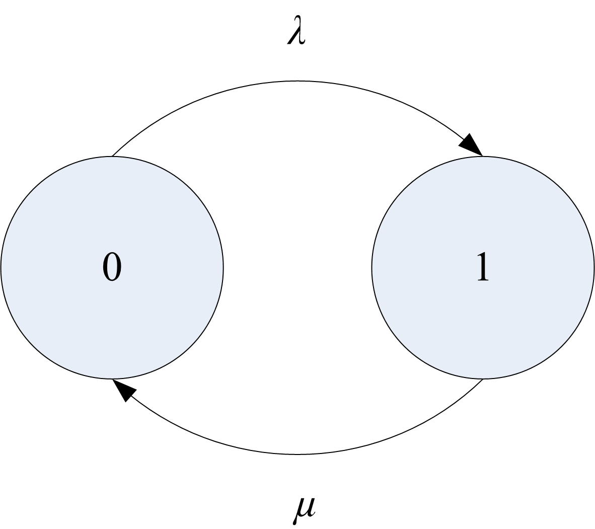
The rate of transition into state 0 can be thought of as the rate that probability flows from state 1 to state 0 times the chance of being in state 1, i.e. \(\mu P_1\). The rate of transition out of state 0 can be thought of as the rate from state 0 to state 1 times the chance of being in state 0, i.e. \(\lambda P_0\). Using these ideas yields:
| State | rate in | = | rate out |
|---|---|---|---|
| 0 | \(\mu\) \(P_1\) | = | \(\lambda\) \(P_0\) |
| 1 | \(\lambda\) \(P_0\) | = | \(\mu\) \(P_1\) |
Notice that these are identical equations, but with the fact that \(P_0 + P_1 = 1\), we will have two equations and two unknowns (\(P_0 , P_1\)). Thus, the equations can be easily solved to yield the same results as in Equation C.3 and Equation C.4. Sets of equations derived in this manner are called steady state equations.
Now, more general situations can be examined. Consider a general queueing system with some given number of servers. An arrival to the system represents an increase in the number of customers and a departure from the system represents a decrease in the number of customers in the system.
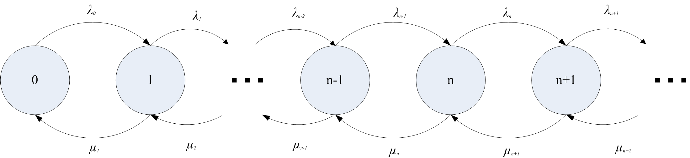
Figure C.5 illustrates a general state transition diagram for this system. Let \(N\) be the number of customers in the system in steady state and define:
\[P_n = P\lbrace N=n\rbrace = \lim_{t \to \infty}P\lbrace N(t) = n\rbrace\]
as the steady state probability that there are \(n\) customers in the system. Let \(\lambda_n\) be the mean arrival rate of customers entering the system when there are \(n\) customers in the system, \(\lambda_n \geq 0\). Let \(\mu_n\) be the mean service rate for the overall system when there are \(n\) customers in the system. This is the rate, at which customers depart when there are \(n\) customers in the system. In this situation, the number of customers may be infinite, i.e. \(N \in \lbrace 0,1,2,\ldots\rbrace\). The steady state equations for this situation are as follows:
| State | rate in | = | rate out |
|---|---|---|---|
| 0 | \(\mu_1 P_1\) | = | \(\lambda_0 P_0\) |
| 1 | \(\lambda_0 P_0 + \mu_2 P_2\) | = | \(\mu_1 P_1 + \lambda_1 P_1\) |
| 2 | \(\lambda_1 P_1 + \mu_3 P_3\) | = | \(\mu_2 P_2 + \lambda_2 P_2\) |
| \(\vdots\) | \(\vdots\) | \(\vdots\) | \(\vdots\) |
| \(n\) | \(\lambda_{n-1} P_{n-1} + \mu_{n+1} P_{n+1}\) | = | \(\mu_n P_n + \lambda_n P_n\) |
These equations can be solved recursively starting with state 0. This yields:
\[ P_1 = \frac{\lambda_0}{\mu_1} P_0 \] \[ P_2 = \frac{\lambda_1 \lambda_0}{\mu_2 \mu_1} P_0 \]
\[ \vdots \] \[ P_n = \frac{\lambda_{n-1} \lambda_{n-2}\cdots \lambda_0}{\mu_n \mu_{n-1} \cdots \mu_1} P_0 = \prod_{j+1}^{n-1}\biggl(\frac{\lambda_j}{\mu_{j+1}}\biggr) P_0 \]
for \(n = 1,2,3, \ldots\). Provided that \(\sum_{n=0}^{\infty} P_n = 1\), \(P_0\) can be computed as:
\[P_0 = \Biggl[\sum_{n=0}^{\infty} \prod_{j=0}^{n-1}\biggl(\dfrac{\lambda_j}{\mu_{j+1}}\biggr)\Biggr]^{-1}\]
Therefore, for any given set of \(\lambda_n\) and \(\mu_n\), one can compute \(P_n\). The \(P_n\) represent the steady state probabilities of having \(n\) customers in the system. Because \(P_n\) is a probability distribution, the expected value of this distribution can be computed. What is the expected value for the \(P_n\) distribution? The expected number of customers in the system in steady state. This is \(L\). The expected number of customers in the system and the queue are given by:
\[\begin{aligned} L & = \sum_{n=0}^{\infty} nP_n \\ L_q & = \sum_{n=c}^{\infty} (n-c)P_n\end{aligned}\]
where \(c\) is the number of servers.
There is one additional formula that is needed before Little’s formula can be applied with other known relationships. For certain systems, e.g. finite system size, not all customers that arrive will enter the queue. Little’s formula is true for the customers that enter the system. Thus, the effective arrival rate must be defined. The effective arrival rate is the mean rate of arrivals that actually enter the system. This is given by computing the expected arrival rate across the states. For infinite system size, we have:
\[\lambda_e = \sum_{n=0}^{\infty} \lambda_n P_n\]
For finite system size, \(k\), we have:
\[\lambda_e = \sum_{n=0}^{k-1} \lambda_n P_n\]
since \(\lambda_n = 0\) for \(n \geq k\). This is because nobody can enter when the system is full. All these relationships yield:
\[\begin{aligned} L & = \lambda_e W \\ L_q & = \lambda_e W_q\\ B & = \frac{\lambda_e}{\mu} \\ \rho & = \frac{\lambda_e}{c\mu}\\ L & = L_q + B \\ W & = W_q + \frac{1}{\mu}\end{aligned}\]
Section C.4 presents the results of applying the general solution for \(P_n\) to different queueing system configurations. Table C.1 presents specific results for the M/M/c queuing system for \(c = 1,2,3\). Using these results and those in Section C.4, the analysis of a variety of different queueing situations is possible.
| \(c\) | \(P_0\) | \(L_q\) |
|---|---|---|
| 1 | \(1 - \rho\) | \(\dfrac{\rho^2}{1 - \rho}\) |
| 2 | \(\dfrac{1 - \rho}{1 + \rho}\) | \(\dfrac{2 \rho^3}{1 - \rho^2}\) |
| 3 | \(\dfrac{2(1 - \rho)}{2 + 4 \rho + 3 \rho^2}\) | \(\dfrac{9 \rho^4}{2 + 2 \rho - \rho^2 - 3 \rho^3}\) |
This section has only scratched the surface of queueing theory. A vast amount of literature is available on queueing theory and its application. You should examine (Gross and Harris 1998), (Cooper 1990), and (Kleinrock 1975) for a more in depth theoretical development of the topic. There are also a number of free on-line resources available on the topic. The interested reader should search on “Queueing Theory Books On Line”. The next section presents some simple examples to illustrate the use of the formulas.
C.2 Examples and Applications of Queueing Analysis
The derivations and formulas in the previous section certainly appear to be intimidating and they can be tedious to apply. Fortunately, there is readily available software that can be used to do the calculations. On line resources for software for queueing analysis can be found at:
The most important part of performing a queueing analysis is to identify the most appropriate queueing model for a given situation. Then, software tools can be used to analyze the situation. This section provides a number of examples and discusses the differences between the systems so that you can better apply the results of the previous sections. The solutions to these types of problems involve the following steps:
Identify the arrival and service processes
Identify the size of the arriving population and the size of the system
Specify the appropriate queueing model and its input parameters
Identify the desired performance measures
Compute the required performance measures
C.2.1 Infinite Queue Examples
In this section, we will explore two queueing systems (M/M/1 and M/M/c) that have an infinite population of arrivals and an infinite size queue. The examples illustrate some of the common questions related to these types of queueing systems.
Example C.1 Customers arrive at a one window drive through pharmacy according to a Poisson distribution with a mean of 10 per hour. The service time per customer is exponential with a mean of 5 minutes. There are 3 spaces in front of the window, including that for the car being served. Other arriving cars can wait outside these 3 spaces. The pharmacy is interested in answering the following questions:
What is the probability that an arriving customer can enter one of the 3 spaces in front of the window?
What is the probability that an arriving customer will have to wait outside the 3 spaces?
What is the probability that an arriving customer has to wait?
How long is an arriving customer expected to wait before starting service?
How many car spaces should be provided in front of the window so that an arriving customer has a \(\gamma\) = 40% chance of being able to wait in one of the provided spaces?
Solution to Example C.1
The customers arrive according to a Poisson process, which implies that the time between arrivals is exponentially distributed. Thus, the arrival process is Markovian (M). The service process is stated as exponential. Thus, the service process is Markovian (M). There is only 1 window and customers wait in front of this window to receive service. Thus, the number of servers is \(c = 1\). The problem states that customers that arrive when the three spaces are filled, still wait for service outside the 3 spaces. Thus, there does not appear to be a restriction on the size of the waiting line. Therefore, this situation can be considered an infinite size system. The arrival rate is specified for any likely customer and there is no information given concerning the total population of the customers. Thus, it appears that an infinite population of customers can be assumed. We can conclude that this is a M/M/1 queueing situation with an arrival rate \(\lambda = 10/hr\) and a service rate of \(\mu = 12/hr\). Notice the input parameters have been converted to a common unit of measure (customers/hour).
The equations for the M/M/1 can be readily applied. From Section C.4 the following formulas can be applied:
\[ \begin{aligned} c & = 1\\ \lambda_n & = \lambda = 10/hr\\ \lambda_{e} & = \lambda \\ \mu_n & =\mu = 12/hr \\ \rho & = \dfrac{\lambda}{c\mu} = r = 10/12 = 5/6\\ P_0 & = 1 - \dfrac{\lambda}{\mu} = 1 - r = 1/6 \\ P_n & = P_0 r^n = \dfrac{1}{6} \left(\dfrac{5}{6}\right)^{n}\\ L & = \dfrac{r}{1 - r} = \dfrac{(5/6)}{1 - (5/6)} = 5\\ L_q & = \dfrac{r^2}{1 - r} = \dfrac{(5/6)^2}{1 - (5/6)} = 4.1\bar{6}\\ W_q & = \frac{L_q}{\lambda} = \frac{r}{\mu(1 - r)} = 0.41\bar{6} \; \text{hours} = 25.02 \; \text{minutes} \\ W & = \frac{L}{\lambda} = 5/10 = 0.5 \; \text{hours} = 30 \; \text{minutes} \\ \end{aligned} \]
Let’s consider each question from the problem in turn:
Probability statements of this form are related to the underlying state variable for the system. In this case, let \(N\) represent the number of customers in the system. To find the probability that an arriving customer can enter one of the 3 spaces in front of the window, you should consider the question: When can a customer enter one of the 3 spaces? A customer can enter one of the three spaces when there are 0 or 1 or 2 customers in the system. This is not \(N\) = 0, 1, 2, or 3 because if there are 3 customers in the system, then the \(3^{rd}\) space is taken. Therefore, \(P\lbrace N \leq 2 \rbrace\) needs to be computed.
To compute \(P[N \leq 2]\) note that:\[P[N \geq n] = \sum_{j=n}^{\infty} P_0 r^j = (1 - r)\sum_{j=n}^{\infty} r^{j-n} = (1 - r)\dfrac{r^n}{1 - r} = r^n\]
Therefore, \(P[N \leq n]\) is:
\[P[N \leq n] = 1 - P[N > n] = 1 - P[N \geq n + 1] = 1 - r^{n + 1}\]
Thus, we have that \(P[N \leq 2] = 1 - r^3 \cong 0.42\)
An arriving customer will have to wait outside of the 3 spaces, when there are more than 2 (3 or more) customers in the system. Thus, \(P[N > 2]\) needs to be computed to answer question (b). This is the complement event for part (a), \(P[N > 2] = 1 - P[N \leq 2] \cong 0.58\)
An arriving customer has to wait when there are 1 or more customers already at the pharmacy. This is \(P[N \geq 1]= 1 - P[N < 1] = 1 - P_0\).
\[P[N \geq 1] = 1 - P[N < 1] = 1 - P_0 = 1 - (1 - r) = \rho = \dfrac{5}{6}\]
The waiting time that does not include service is the queueing time. Thus, \(W_q\) needs to be computed to answer question (d).
\[W_q = 0.41\bar{6} \; \text{hours} = 25.02 \; \text{minutes}\]
This is a design question for which the probability of waiting in one of the provided spaces is used to determine the number of spaces to provide. Suppose that there are \(m\) spaces. An arriving customer can waiting in one of the spaces if there are \(m - 1\) or less customers in the system. Thus, \(m\) needs to be chosen such that \(P\lbrace N \leq m - 1\rbrace = 0.4\).
\[P[N \leq m - 1] = \gamma\] \[1 - r^m = \gamma\] \[r^m = 1 - \gamma\] \[m = \dfrac{\ln(1 - \gamma)}{\ln r} = \dfrac{\ln(1 - 0.4)}{\ln(\frac{5}{6})} = 2.8 \cong 3 \; \text{spaces}\]
Rounding up guarantees \(P[N \leq m - 1] \geq 0.4)\).
The following example models self-service copiers.
Example C.2 The Student Union Copy center is considering the installation of self-service copiers. They predict that the arrivals will be Poisson with a rate of 30 per hour and that the time spent copying is exponentially distributed with a mean of 1.75 minutes. They would like the chance that 4 or more people in the copy center to be less than 5%. How many copiers should they install?
Solution to Example C.2
The Poisson arrivals and exponential service times make this situation an M/M/c where \(c\) is the number of copiers to install and \(\lambda = 0.5\) and \(\mu = 1/1.75\) per minute. To meet the design criteria, \(P[N \geq 4] = 1 - P[N \leq 3]\) needs to be computed for systems with \(c = 1,2,\ldots\) until \(P[N \geq 4]\) is less than 5%. This can be readily achieved with the provided formulas or by utilizing the aforementioned software. In what follows, the QTSPlus software was used.
The software is very self-explanatory. It is important to remember that when applying the queueing formulas make sure that you keep your time units consistent. Setting up the QTSPlus spreadsheet as shown in Figure C.6 with \(c=3\) yields the results shown in Figure C.7. By changing the number of servers, one can find that \(c=3\) meets the probability requirement as shown in Table C.2.
| \(c\) | \(P[N \geq 4] = 1 - P[N \leq 3]\) |
|---|---|
| 1 | 0.586182 |
| 2 | 0.050972 |
| 3 | 0.019034 |
| 4 | 0.013022 |
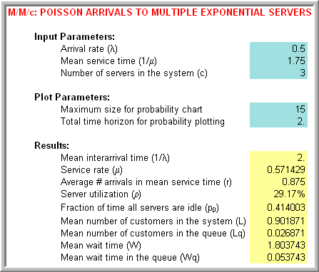
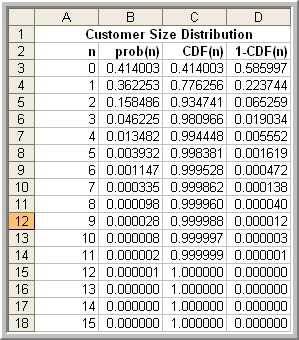
C.2.1.1 Square Root Staffing Rule
Often in the case of systems with multiple servers such as the M/M/c, you want to determine the best value of \(c\), as in Example C.2. Another common design situation is to determine the value \(c\) of such that there is an acceptable probability that an arriving customer will have to wait. For the case of Poisson arrivals, this is the same as the steady state probability that there are more than c customers in the system. For the M/M/c model, this is called the Erlang delay probability:
\[P_w = P[N \geq c] = \sum_{n=c}^{\infty} P_n = \dfrac{\dfrac{r^c}{c!}}{\dfrac{r^c}{c!} + (1 - \rho)\sum_{j=0}^{c-1} \dfrac{r^j}{j!}}\]
Even though this is a relatively easy formula to use (especially in view of available spreadsheet software), an interesting and useful approximation has been developed called the square root staffing rule. The derivation of the square root staffing rule is given in (Tijms 2003). In what follows, the usefulness of the rule is discussed.
The square root staffing rule states that the least number of servers, \(c^{*}\), required to meet the criteria, \(P_w \leq \alpha\) is given by: \(c^{*} \cong r+ \gamma_\alpha\sqrt{r}\), where the factor \(\gamma_\alpha\) is the solution to the equation:
\[\dfrac{\gamma\Phi(\gamma)}{\varphi(\gamma)} = \dfrac{1 - \alpha}{\alpha}\]
The functions, \(\Phi(\cdot)\) and \(\varphi(\cdot)\) are the cumulative distribution function (CDF) and the probability density function (PDF) of a standard normal random variable. Therefore, given a design criteria, \(\alpha\), in the form a probability tolerance, you can find the number of servers that will result in the probability of waiting being less than \(\alpha\). This has very useful application in the area of call service centers and help support lines.
Example C.3 The Student Union Copy center is considering the installation of self-service copiers. They predict that the arrivals will be Poisson with a rate of 30 per hour and that the time spent copying is exponentially distributed with a mean of 1.75 minutes. Find the least number of servers such that the probability that an arriving customer waits is less than or equal to 0.10.
Solution to Example C.3
For \(\lambda = 0.5\) and \(\mu = 1/1.75\) per minute, you have that \(r = 0.875\). Figure C.8 illustrates the use of the SquareRootStaffingRule.xls spreadsheet that accompanies this chapter. The spreadsheet has text that explains the required inputs. Enter the offered load \(r\) in cell B3 and the delay criteria of 0.1 in cell B4. An initial search value is required in cell B5. The value of 1.0 will always work. The spreadsheet uses the goal seek functionality to solve for \(\gamma_\alpha\).
For this problem, this results in about 3 servers being needed to ensure that the probability of wait will be less than 10%. The square root staffing rule has been shown to be quite a robust approximation and can be useful in many design settings involving staffing.
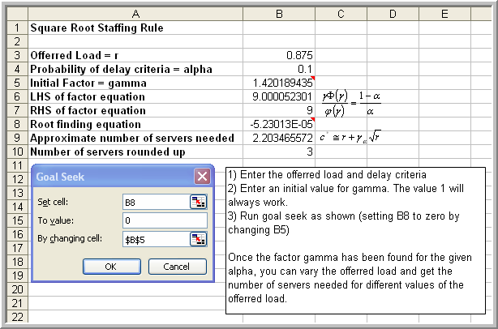
The previous examples have had infinite system capacity. The next section presents examples of finite capacity queueing systems.
C.2.2 Finite Queue Examples
In this section, we will explore three queueing systems that are finite in some manner, either in space or in population. The examples illustrate some of the common questions related to these types of systems.
Example C.4 A single machine is connected to a conveyor system. The conveyor causes parts to arrive to the machine at a rate of 1 part per minute according to a Poisson distribution. There is a finite buffer of size 5 in front of the machine. The machine’s processing time is considered to be exponentially distributed with a mean rate of 1.2 parts per minute. Any parts that arrive on the conveyor when the buffer is full are carried to other machines that are not part of this analysis. What are the expected system time and the expected number of parts at the machining center?
Solution to Example C.4
The finite buffer, Poisson arrivals, and exponential service times make this situation an M/M/1/6 where \(k = 6\) is the size of the system (5 in buffer + 1 in service) and \(\lambda =1\) and \(\mu = 1.2\) per minute. The desired performance measures are \(W\) and \(L\). Figure C.9 presents the results using QTSPlus. Notice that in this case, the effective arrival rate must be computed:
\[\lambda_e = \sum_{n=0}^{k-1} \lambda_n P_n = \sum_{n=0}^{k-1} \lambda P_n = \lambda\sum_{n=0}^{k-1} P_n = \lambda(1 - P_k)\]
Rearranging this formula, yields, \(\lambda = \lambda_e + \lambda_{f}\) where \(\lambda_{f} = \lambda P_k\) equals the mean number of customers that are turned away from the system because it is full. According to Figure C.9, the expected number of turned away because the system is full is about 0.077 per minute (or about 4.62 per hour).
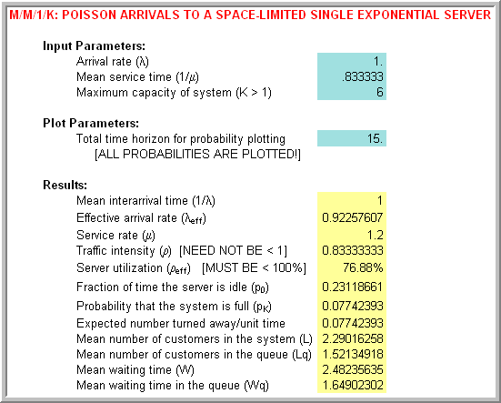
Let’s take a look at modeling a situation that we experience everyday, parking lots.
Example C.5 The university has a row of 10 parking meter based spaces across from the engineering school. During the peak hours students arrive to the parking lot at a rate of 40 per hour according to a Poisson distribution and the students use the parking space for approximately 60 minutes exponentially distributed. If all the parking spaces are taken, it can be assumed that an arriving student does not wait (goes somewhere else to park). Suppose that the meters cost \(w\) = $0.03 per minute, i.e. $2 per hour. How much income does the university potentially lose during peak hours on average because the parking spaces are full?
Solution to Example C.5
In this system, the parking spaces are the servers of the system. There are 10 parking spaces so that \(c = 10\). In addition, there is no waiting for one of the meters and thus no queue forms. Therefore, the system size, \(k\), is also 10. Because of the Poisson arrival process and exponential service times, this can be considered an M/M/10/10 queueing system. In other words, the size of the system is same as the number of servers, \(c = k = 10\).
In the case of a M/M/c/c queueing system, \(P_c\) represents the probability that all the servers in the system are busy. Thus, it also represents the probability that an arriving customer will be turned away. The formula for the probability of a lost customer is called the Erlang loss formula:
\[P_c = \frac{\frac{r^c}{c!}}{\sum_{n=0}^c \frac{r^n}{n!}}\]
Customers arrive at the rate \(\lambda = 20/hr\) whether the system is full or not. Thus, the expected number of lost customers per hour is \(\lambda P_c\). Since each customer brings \(1/\mu\) service time charged at \(w\) = $2 per hour, each arriving customer brings \(w/\mu\) of income on average; however, not all arriving customers can park. Thus, the university loses \(w \times 1/\mu \times \lambda P_c\) of income per hour. Figure C.10 illustrates the use of the QTSPlus software. In the figure the arrival rate of 40 per hour and the mean service time of 1 hours is entered. The number of parking spaces, 10, is the size of the system.
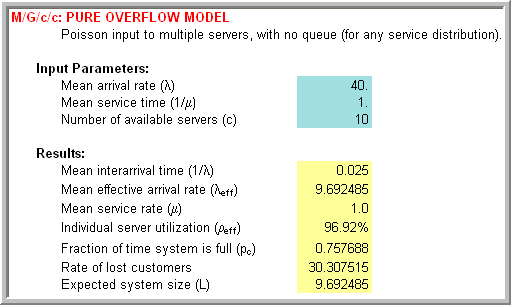
Thus according to Figure C.10, the university is losing about $2 \(\times\) 30.3 = $60.6 per hour because the metered lot is full during peak hours.
For this example, the service times are exponentially distributed. It turns out that for the case of \(c = k\), the results for the M/M/c/c model are the same for the M/G/c/c model. In other words, the form of the service time distribution does not matter. The mean of the service distribution is the critical input parameter to this analysis.
In the next example, a finite population of customers that can arrive, depart, and then return is considered. A classic and important example of this type of system is the machine interference or operator tending problem. A detailed discussion of the analysis and application of this model can be found in (Stecke 1992).
In this situation, a set of machines are tended by 1 or more operators. The operators must tend to stoppages (breakdowns) of the machines. As the machines breakdown, they may have to wait for the operator to complete the service of other machines. Thus, the machine stoppages cause the machines to interfere with the productivity of the set of machines because of their dependence on a common resource, the operator.
The situation that we will examine and for which analytical formulas can be derived is called the M/M/c/k/k queueing model where \(c\) is the number of servers (operators) and \(k\) is the number of machines (size of the population). Notice that the size of the system is the same as the size of the calling population in this particular model. For this system, the arrival rate of an individual machine, \(\lambda\), is specified. This is not the arrival rate of the population as has been previously utilized. The service rate of \(\mu\) for each operator is also necessary. The arrival and service rates for this system are:
\[\lambda_n = \begin{cases} (k - n) \lambda & n=0,1,2, \ldots k\\ 0 & n \geq k \end{cases}\]
\[\mu_n = \begin{cases} n \mu & n = 1,2,\ldots c\\ c \mu & n \geq c \end{cases}\]
These rates are illustrated in the state diagram of Figure C.11 for the case of 2 operators and 5 machines. Thus, for this system, the arrival rate to the system decreases as more machines breakdown. Notice that in the figure the arrival rate from state 0 to state 1 is \(5\lambda\). This is because there are 5 machines that are not broken down, each with individual rate, \(\lambda\). Thus, the total rate of arrivals to the system is \(5\lambda\). This rate goes down as more machines breakdown. When all the machines are broken down, the arrival rate to the system will be zero.
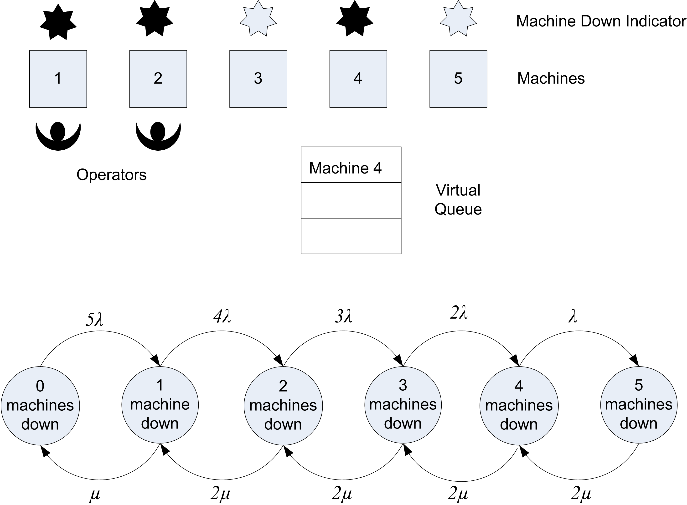
Notice also that the service rate from state 1 to state 0 is \(\mu\). When one machine is in the system, the operator works at rate \(\mu\). Note also that the rate from state 2 to state 1 is \(2\mu\). This is because when there are 2 broken down machines the 2 operators are working each at rate \(\mu\). Thus, the rate of leaving from state 2 to 1 is \(2\mu\). Because there are only 2 operators in this illustration, the maximum rate is \(2\mu\) for state 2-5.
Notice that the customer in this system is the machine. Even though the machines do not actually move to line up in a queue, they form a virtual queue for the operators to receive their repair. Let’s consider an example of this system.
Example C.6 Suppose a manufacturing system contains 5 machines, each subject to randomly occurring breakdowns. A machine runs for an amount of time that is an exponential random variable with a mean of 10 hours before breaking down. At present there are 2 operators to fix the broken machines. The amount of time that an operator takes to service the machines is exponential with a mean of 4 hours. An operator repairs only 1 machine at a time. If more machines are broken down than the current number of operators, the machines must wait for the next available operator for repair. They form a FIFO queue to wait for the next available operator. The number of operators required to tend to the machines in order to minimize down time in a cost effective manner is desired. Assume that it costs the system $60 per hour for each machine that is broken down. Each operator is paid $15 per hour regardless of whether they are repairing a machine or not.
Solution to Example C.6
The arrival rate of an individual machine is \(\lambda = 1/10\) per hour and the service rate of \(\mu = 1/4\) per hour for each operator. In order to decide the most appropriate number of operators to tend the machines, a service criteria or a way to measure the cost of the system is required. Since costs are given, let’s formulate how much a given system configuration costs.
The easiest way to formulate a cost is to consider what a given system configuration costs on a per time basis, e.g. the cost per hour. Clearly, the system costs \(15 \times c\) ($/hour) to employ \(c\) operators. The problem also states that it costs $60/hour for each machine that is broken down. A machine is broken down if it is waiting for an operator or if it is being repaired by an operator. Therefore a machine is broken down if it is in the queueing system.
In terms of queueing performance measures, \(L\) machines can be expected to be broken down at any time in steady state. Thus, the expected steady state cost of the broken down machines is \(60 \times L\) per hour. The total expected cost per hour, \(E[\mathit{TC}]\), of operating a system configuration in steady state is thus:
\[E[\mathit{TC}] = 60 \times L + 15 \times c\]
Thus, the total expected cost, \(E[\mathit{TC}]\), can be evaluated for various values of \(c\) and the system that has the lowest cost determined.
Using the QTSPlus software, the necessary performance measures can be calculated and tabulated. Within the QTSPlus software you must choose the model category Multiple Servers and then choose the Markov Multi-Server Finite Source Queue without Spares model. Figure C.12 illustrates the inputs for the case of 1 server with 5 machines. Note that the software requests the time between arrivals, \(1/lambda\) and the mean service time, \(1/\mu\), rather than \(\lambda\) and \(\mu\).
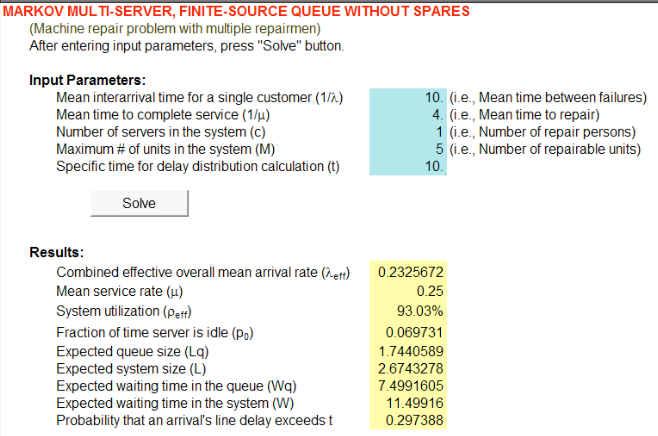
| \(\lambda\) | 0.10 | 0.10 | 0.10 | 0.10 | 0.10 |
| \(\mu\) | 0.25 | 0.25 | 0.25 | 0.25 | 0.25 |
| \(c\) | 1 | 2 | 3 | 4 | 5 |
| \(N\) | 5 | 5 | 5 | 5 | 5 |
| \(K\) | 5 | 5 | 5 | 5 | 5 |
| System | M/M/1/5/5 | M/M/2/5/5 | M/M/3/5/5 | M/M/4/5/5 | M/M/5/5/5 |
| \(L\) | 2.674 | 1.661 | 1.457 | 1.430 | 1.429 |
| \(L_q\) | 1.744 | 0.325 | 0.040 | 0.002 | 0.000 |
| \(B\) | 0.930 | 1.336 | 1.417 | 1.428 | 1.429 |
| \(B/c\) | 0.930 | 0.668 | 0.472 | 0.357 | 0.286 |
| \(E[\mathit{TC}]\) | $175.460 | $129.655 | $132.419 | $145.816 | $160.714 |
| \(\overline{\mathit{MU}}\) | 0.465 | 0.668 | 0.709 | 0.714 | 0.714 |
Table C.3 shows the results of the analysis. The results indicate that as the number of operators increase, the expected cost reaches its minimum at \(c = 2\). As the number of operators is increased, the machine utilization increases but levels off. The machine utilization is the expected number of machines that are not broken down divided by the number of machines:
\[\text{Machine Utilization} = \overline{\mathit{MU}} = \dfrac{k - L}{k} = 1 - \dfrac{L}{k}\]
C.3 Non-Markovian Queues and Approximations
So far, the queueing models that have been analyzed all assume a Poisson arrival process and exponential service times. For other arrival and service processes only limited or approximate results are readily available. There are two cases worth mentioning here. The first case is the M/G/1 queue and the second case is an approximation for the GI/G/c queueing system. Recall that G represents any general distribution. In other words the results will hold regardless of the distribution. Also, GI refers to an arrival process which has the time between arrivals as independent and identically distributed random variables with any distribution. Table C.4 presents the basic results for the M/G/1 and M/D/1 queueing systems.
| Model | Parameters | \(L_q\) |
|---|---|---|
| M/G/1 | \(E[ST] = \dfrac{1}{\mu}\); \(Var[ST] = \sigma^2\); \(r = \lambda/\mu\) | \(L_q = \dfrac{\lambda^2 \sigma^2 + r^2}{2(1 - r)}\) |
| M/D/1 | \(E[ST] = \dfrac{1}{\mu}\); \(Var[ST] = 0\); \(r = \lambda/\mu\) | \(L_q = \dfrac{r^2}{2(1 - r)}\) |
For the M/G/1 model with a service distribution having a mean \(E[ST] = 1/\mu\) and variance \(\sigma^2\), the expected number in the system is:
\[L_q = \dfrac{\lambda^2 \sigma^2 + r^2}{2(1 - r)} + r\]
From this formula for the expected number in the system, the other performance measures can be obtained via Little’s formula. Notice that only the mean and the variance of the service time distribution are necessary in this case.
For the case of the GI/G/c queue a number of approximations have been influenced by an approximation for the GI/G/1 queue that first appeared in (Kingman 1964). His single-server approximation is shown below:
\[W_q(GI/G/1) \approx \Biggl(\dfrac{c_a^2 + c_s^2}{2}\Biggr) W_q(M/M/1)\]
In this equation, \(W_q\)(M/M/1) denotes the expected waiting time in the queue for the M/M/1 model \(c_a^2\) and \(c_s^2\) and represent the squared coefficient of variation for the inter-arrival time and service time distributions. Recall that for a random variable, \(X\), the squared coefficient of variation is given by \(c_X^2 = Var[X]/(E[X])^2\). (Whitt 1983) used a very similar approximation for the GI/G/c queue to compute the traffic congestion at each node in a queueing network for his Queueing Network Analyzer:
\[W_q(GI/G/c) \approx \Biggl(\dfrac{c_a^2 + c_s^2}{2}\Biggr) W_q(M/M/c)\]
A discussion of queuing approximations of this form as well as additional references can be found in (Whitt 1993).
Thus, to approximate the performance of a GI/G/c queue, you need only the first two moments of the inter-arrival and service time distributions and a way to compute the waiting time in the queue for a M/M/c queueing system. These results are useful when trying to verify and validate a simulation model of a queueing system, especially in the case of a system that consists of more than one queueing system organized into a network. Before examining that more complicated case, some of the issues related to using to simulate single queue systems should be examined.
The following section summarizes the formulas for the previously mentioned queueing systems. The appendis is finished off with some example exercises that can be used to test your understanding of the application of these formulas.
C.4 Summary of Queueing Formulas
This section provides the formulas for basic single queue stations and is meant simply as a resource where the formulas are readily available for potential applicaiton. The following notation is used within this section.
Let \(N\) represent the steady state number of customers in the system, where \(N \in \{0,1,2,...,k\}\) where \(k\) is the maximum number of customers in the system and may be infinite (\(\infty\)).
Let \(\lambda_{n}\) be the arrival rate when there are \(N=n\) customers in the system.
Let \(\mu_{n}\) be the service rate when there are \(N=n\) customers in the system.
Let \(P_n = P[N=n]\) be the probability that there are \(n\) customers in the system in steady state.
When \(\lambda_{n}\) is constant for all \(n\), we write \(\lambda_{n} = \lambda\).
When \(\mu_{n}\) is constant for all \(n\), we write \(\mu_{n} = \mu\).
Let \(\lambda_e\) be the effective arrival rate for the system, where
\[\lambda_e = \sum_{n=0}^{\infty} \lambda_n P_n\] Since \(\lambda_n = 0\) for \(n \geq k\) for a finite system size, \(k\), we have:
\[\lambda_e = \sum_{n=0}^{k-1} \lambda_n P_n\]
Let \(\rho = \frac{\lambda}{c\mu}\) be the utilization.
Let \(r = \frac{\lambda}{\mu}\) be the offered load.
C.4.1 M/M/1 Queue
\[\begin{aligned} \lambda_n & =\lambda \\ \mu_n & = \mu \\ r & = \lambda/\mu \end{aligned} \]
\[P_0 = 1 - r\] \[P_n = P_0 r^n\] \[L_q = \dfrac{r^2}{1 - r}\]
| Model | Parameters | \(L_q\) |
|---|---|---|
| M/G/1 | \(E[ST] = \dfrac{1}{\mu}\); \(Var[ST] = \sigma^2\); \(r = \lambda/\mu\) | \(L_q = \dfrac{\lambda^2 \sigma^2 + r^2}{2(1 - r)}\) |
| M/D/1 | \(E[ST] = \dfrac{1}{\mu}\); \(Var[ST] = 0\); \(r = \lambda/\mu\) | \(L_q = \dfrac{r^2}{2(1 - r)}\) |
C.4.2 M/M/c Queue
\[ \begin{aligned} \lambda_n & =\lambda \\ \mu_n & = \begin{cases} n \mu & 0 \leq n < c \\ c \mu & n \geq c \end{cases} \\ \rho & = \lambda/c\mu \quad r = \lambda/\mu \end{aligned} \]
\[P_0 = \biggl[\sum\limits_{n=0}^{c-1} \dfrac{r^n}{n!} + \dfrac{r^c}{c!(1 - \rho)}\biggr]^{-1} \] \[ L_q = \biggl(\dfrac{r^c \rho}{c!(1 - \rho)^2}\biggl)P_0 \]
\[ P_n = \begin{cases} \dfrac{(r^n)^2}{n!} P_0 & 1 \leq n < c \\[1.5ex] \dfrac{r^n}{c!c^{n-c}} P_0 & n \geq c \end{cases} \]
| \(c\) | \(P_0\) | \(L_q\) |
|---|---|---|
| 1 | \(1 - \rho\) | \(\dfrac{\rho^2}{1 - \rho}\) |
| 2 | \(\dfrac{1 - \rho}{1 + \rho}\) | \(\dfrac{2 \rho^3}{1 - \rho^2}\) |
| 3 | \(\dfrac{2(1 - \rho)}{2 + 4 \rho + 3 \rho^2}\) | \(\dfrac{9 \rho^4}{2 + 2 \rho - \rho^2 - 3 \rho^3}\) |
C.4.3 M/M/c/k Queue
\[ \begin{aligned} \lambda_n & = \begin{cases} \lambda & n < k \\ 0 & n \geq k \end{cases} \\ \mu_n & = \begin{cases} n \mu & 0 \leq n < c \\ c \mu & c \leq n \leq k \end{cases} \\ \rho & = \lambda/c\mu \quad r = \lambda/\mu \\ \lambda_e & = \lambda (1 - P_k) \end{aligned} \] \[ P_0 = \begin{cases} \biggl[\sum\limits_{n=0}^{c-1} \dfrac{r^n}{n!} + \dfrac{r^c}{c!} \dfrac{1-\rho^{k-c+1}}{1 - \rho}\biggr]^{-1} & \rho \neq 1\\[1.5ex] \biggl[\sum\limits_{n=0}^{c-1} \dfrac{r^n}{n!} + \dfrac{r^c}{c!} (k-c+1)\biggl]^{-1} & \rho = 1 \end{cases} \] \[ P_n = \begin{cases} \dfrac{r^n}{n!} P_0 & 1 \leq n < c \\[1.5ex] \dfrac{r^n}{c!c^{n-c}} P_0 & c \leq n \leq k \end{cases} \]
C.4.4 M/G/c/c Queue
\[ \begin{aligned} \lambda_n & = \begin{cases} \lambda & n < c \\ 0 & n \geq c \end{cases} \\ \mu_n & = \begin{cases} n \mu & 0 \leq n \leq c \\ 0 & n > c \end{cases} \\ \rho & = \lambda/c\mu \quad r = \lambda/\mu \\ \lambda_e & = \lambda (1 - P_k) \end{aligned} \]
\[P_0 = \biggr[\sum\limits_{n=0}^c \dfrac{r^n}{n!}\biggl]^{-1}\] \[ \begin{array}{c} P_n = \dfrac{r^n}{n!} P_0 \\ 0 \leq n \leq c \end{array} \] \[L_q = 0\]
C.4.5 M/M/1/k Queue
\[ \begin{aligned} \lambda_n & = \begin{cases} (k - n)\lambda & 0 \leq n < k \\ 0 & n \geq k \end{cases} \\ \mu_n & = \begin{cases} (k - n)\lambda & 0 \leq n \leq k \\ 0 & n > k \end{cases} \\ r & = \lambda/\mu \quad \lambda_e = \lambda(k - L) \end{aligned} \] \[ P_0 = \biggl[\sum\limits_{n=0}^k \prod\limits_{j=0}^{n-1} \biggl(\dfrac{\lambda_j}{\mu_{j+1}}\biggr)\biggr]^{-1} \] \[ P_n = \binom{k}{n} n! r^n P_0 \]
\[ L_q = \begin{cases} \dfrac{\rho}{1 - \rho} - \dfrac{\rho (k \rho^k + 1)}{1 - \rho^{k+1}} & \rho \neq 1 \\ \dfrac{k(k - 1)}{2(k + 1)} & \rho = 1 \end{cases} \]
C.4.6 M/M/c/k Queue
\[ \begin{aligned} \lambda_n & = \begin{cases} (k - n)\lambda & 0 \leq n < k \\ 0 & n \geq k \\ \end{cases} \\ \mu_n & = \begin{cases} n \mu & 0 \leq n < c \\ c \mu & n \geq c \\ \end{cases} \\ r & = \lambda/\mu \quad \lambda_e = \lambda(k - L) \end{aligned} \]
\[P_0 = \biggl[\sum\limits_{n=0}^k \prod\limits_{j=0}^{n-1} (\dfrac{\lambda_j}{\mu_{j+1}})\biggr]^{-1}\] \[ P_n = \begin{cases} \binom{k}{n} r^n P_0 & 1 \leq n < c \\[2ex] \binom{k}{n} \dfrac{n!}{c^{n-c} c!} r^n P_0 & c \leq n \leq k \end{cases} \]
\[ L_q = \begin{cases} \dfrac{P_0 r^c \rho}{c!(1 - \rho)^2}[1 - \rho^{k-c} - (k-c) \rho^{k-c} (1 - \rho)] & \rho < 1 \\[2ex] \dfrac{r^c (k - c)(k - c + 1)}{2c!} P_0 & \rho = 1 \end{cases} \]
C.4.7 M/M/1/k/k Queue
\[\begin{aligned} \lambda_n & = \begin{cases} (k - n)\lambda & 0 \leq n < k \\ 0 & n \geq k \\ \end{cases} \\ \mu_n & = \begin{cases} (k - n)\lambda & 0 \leq n \leq k \\ 0 & n > k \\ \end{cases} \\ r & = \lambda/\mu \quad \lambda_e = \lambda(k - L) \end{aligned} \] \[P_0 = \biggl[\sum\limits_{n=0}^k \prod\limits_{j=0}^{n-1} \biggl(\dfrac{\lambda_j}{\mu_{j+1}}\biggr)\biggr]^{-1}\] \[\begin{array}{c} P_n = \binom{k}{n} n! r^n P_0 \\[1.5ex] 0 \leq n \leq k \end{array}\]
\[ L_q = k - \biggl(\dfrac{\lambda + \mu}{\lambda}\biggr)(1 - P_0) \]
C.4.8 M/M/c/k/k Queue
\[\begin{aligned} \lambda_n & = \begin{cases} (k - n)\lambda & 0 \leq n < k \\ 0 & n \geq k \\ \end{cases} \\ \mu_n & = \begin{cases} n \mu & 0 \leq n < c \\ c \mu & n \geq c \\ \end{cases} \\ r & = \lambda/\mu \quad \lambda_e = \lambda(k - L) \end{aligned} \] \[ P_0 = \biggl[\sum\limits_{n=0}^k \prod\limits_{j=0}^{n-1} (\dfrac{\lambda_j}{\mu_{j+1}})\biggr]^{-1} \]
\[P_n = \begin{cases} \binom{k}{n} r^n P_0 & 1 \leq n < c \\[2ex] \binom{k}{n} \dfrac{n!}{c^{n-c} c!} r^n P_0 & c \leq n \leq k \end{cases} \]
\[ L_q = \sum\limits_{n=c}^k (n - c) P_n \]
C.5 Exercises
For the exercises in this section, first start with specifying the appropriate queueing models needed to solve the exercise using Kendall’s notation. Then, specify the parameters of the model, e.g. \(\lambda_{e}\), \(\mu\), \(c\), size of the population, size of the system, etc. Specify how and what you would compute to solve the problem. Be as specific as possible by specifying the equations needed. Then, compute the quantities if requested. You might also try to use to solve the problems via simulation.
Exercise C.1 True or False: In a queueing system with random arrivals and random service times, the performance will be best if the arrival rate is equal to the service rate because then there will not be any queueing.
Exercise C.2 The Burger Joint in the UA food court uses an average of 10,000 pounds of potatoes per week. The average number of pounds of potatoes on hand is 5,000. On average, how long do potatoes stay in the restaurant before being used? What queuing concept is use to solve this problem?
Exercise C.3 Consider a single pump gas station where the arrival process is Poisson with a mean time between arrivals of 10 minutes. The service time is exponentially distributed with a mean of 6 minutes. Specify the appropriate queueing model needed to solve the problem using Kendall’s notation. Specify the parameters of the model and what you would compute to solve the problem. Be as specific as possible by specifying the equation needed. Then, compute the desired quantities.
What is the probability that you have to wait for service?
What is the mean number of customer at the station?
What is the expected time waiting in the line to get a pump?
Exercise C.4 Suppose an operator has been assigned to the responsibility of maintaining 3 machines. For each machine the probability distribution of the running time before a breakdown is exponentially distributed with a mean of 9 hours. The repair time also has an exponential distribution with a mean of 2 hours. Specify the appropriate queueing model needed to solve the problem using Kendall’s notation. Specify the parameters of the model and what you would compute to solve the problem. Be as specific as possible by specifying the equation needed. Then, compute the desired quantities.
What is the probability that the operator is idle?
What is the expected number of machines that are running?
What is the expected number of machines that are not running?
Exercise C.5 SuperFastCopy wants to install self-service copiers, but cannot decide whether to put in one or two machines. They predict that arrivals will be Poisson with a rate of 30 per hour, and the time spent copying is exponentially distributed with a mean of 1.75 minutes. Because the shop is small they want the probability of 5 or more customers in the shop to be small, say less than 7%. Make a recommendation based on queueing theory to SuperFastCopy.
Exercise C.6 Each airline passenger and his or her carry-on baggage must be checked at the security checkpoint. Suppose XNA averages 10 passengers per minute with exponential inter-arrival times. To screen passengers, the airport must have a metal detector and baggage X-ray machines. Whenever a checkpoint is in operation, two employees are required (one operates the metal detector, one operates the X-ray machine). The passenger goes through the metal detector and simultaneously their bag goes through the X-ray machine. A checkpoint can check an average of 12 passengers per minute according to an exponential distribution.
What is the probability that a passenger will have to wait before being screened? On average, how many passengers are waiting in line to enter the checkpoint? On average, how long will a passenger spend at the checkpoint?
Exercise C.7 Two machines are being considered for processing a job within a factory. The first machine has an exponentially distributed processing time with a mean of 10 minutes. For the second machine the vendor has indicated that the mean processing time is 10 minutes but with a standard deviation of 6 minutes. Using queueing theory, which machine is better in terms of the average waiting time of the jobs?
Exercise C.8 Customers arrive at a one-window drive in bank according to a Poisson distribution with a mean of 10 per hour. The service time for each customer is exponentially distributed with a mean of 5 minutes. There are 3 spaces in front of the window including that for the car being served. Other arriving cars can wait outside these 3 spaces. Specify the appropriate queueing model needed to solve the problem using Kendall’s notation. Specify the parameters of the model and what you would compute to solve the problem. Be as specific as possible by specifying the equation needed. Then, compute the desired quantities.
What is the probability that an arriving customer can enter one of the 3 spaces in front of the window?
What is the probability that an arriving customer will have to wait outside the 3 spaces?
How long is an arriving customer expected to wait before starting service?
How many spaces should be provided in front of the window so that an arriving customer can wait in front of the window at least 20% of the time? In other words, the probability of at least one open space must be greater than 20%.
Exercise C.9 Joe Rose is a student at Big State U. He does odd jobs to supplement his income. Job requests come every 5 days on the average, but the time between requests is exponentially distributed. The time for completing a job is also exponentially distributed with a mean of 4 days.
What would you compute to find the chance that Joe will not have any jobs to work on?
What would you compute to find the average value of the waiting jobs if Joe gets about $25 per job?
Exercise C.10 The manager of a bank must determine how many tellers should be available. For every minute a customer stands in line, the manager believes that a delay cost of 5 cents is incurred. An average of 15 customers per hour arrive at the bank. On the average, it takes a teller 6 minutes to complete the customer’s transaction. It costs the bank $9 per hour to have a teller available. Inter-arrival and service times can be assumed to be exponentially distributed.
What is the minimum number of tellers that should be available in order for the system to be stable (i.e. not have an infinite queue)? If the system has 3 tellers, what is the probability that there will be no one in the bank? What is the expected total cost of the system per hour, when there are 2 tellers?
Exercise C.11 You have been hired to analyze the needs for loading dock facilities at a trucking terminal. The present terminal has 4 docks on the main building. Any trucks that arrive when all docks are full are assigned to a secondary terminal, which is a short distance away from the main terminal. Assume that the arrival process is Poisson with a rate of 5 trucks each hour. There is no available space at the main terminal for trucks to wait for a dock. At the present time nearly 50% of the arriving trucks are diverted to the secondary terminal. The average service time per truck is two hours on the main terminal and 3 hours on the secondary terminal, both exponentially distributed. Two proposals are being considered. The first proposal is to expand the main terminal by adding docks so that at least 80% of the arriving trucks can be served there with the remainder being diverted to the secondary terminal. The second proposal is to expand the space that can accommodate up to 8 trucks. Then, only when the holding area is full will the trucks be diverted to secondary terminal.
What queuing model should you use to analyze the first proposal? State the model and its parameters. State what you would do to determine the required number of docks so that at least 80% of the arriving trucks can be served for the first proposal. Note you do not have to compute anything. What model should you use to analyze the 2nd proposal? State the model and its parameters.
Exercise C.12 Sly’s convenience store operates a two-pump gas station. The lane leading to the pumps can house at most five cars, including those being serviced. Arriving cars go elsewhere if the lane is full. The distribution of the arriving cars is Poisson with a mean of 20 per hour. The time to fill up and pay for the purchase is exponentially distributed with a mean of 6 minutes.
Specify using queueing notation, exactly what you would compute to find the percentage of cars that will seek business elsewhere?
Specify using queueing notation, exactly what you would compute to find the utilization of the pumps?
Exercise C.13 An airline ticket office has two ticket agents answering incoming phone calls for flight reservations. In addition, two callers can be put on hold until one of the agents is available to take the call. If all four phone lines (both agent lines and the hold lines) are busy, a potential customer gets a busy signal, and it is assumed that the call goes to another ticket office and that the business is lost. The calls and attempted calls occur randomly (i.e. according to Poisson process) at a mean rate of 15 per hour. The length of a telephone conversation has an exponential distribution with a mean of 4 minutes.
Specify using queueing notation, exactly what you would compute to find the probability of losing a potential customer?
What would you compute to find the probability that an arriving phone call will not start service immediately but will be able to wait on a hold line?
Exercise C.14 SuperFastCopy has three identical copying machines. When a machine is being used, the time until it breaks down has an exponential distribution with a mean of 2 weeks. A repair person is kept on call to repair the machines. The repair time for a machine has an exponential distribution with a mean of 0.5 week. The downtime cost for each copying machine is $100 per week.
Let the state of the system be the number of machines not working, Construct a state transition diagram for this queueing system.
Write an expression using queueing performance measures to compute the expected downtime cost per week.
Exercise C.15 NWH Cardiac Care Unit (CCU) has 5 beds, which are virtually always occupied by patients who have just undergone major heart surgery. Two registered nurses (RNs) are on duty in the CCU in each of the three 8 hour shifts. About every two hours following an exponential distribution, one of the patients requires a nurse’s attention. The RN will then spend an average of 30 minutes (exponentially distributed) assisting the patient and updating medical records regarding the problem and care provided.
What would you compute to find the average number of patients being attended by the nurses?
What would you compute to fine the average time that a patient spends waiting for one of the nurses to arrive?
Exercise C.16 HJ Bunt, Transport Company maintains a large fleet of refrigerated trailers. For the purposes of this problem assume that the number of refrigerated trailers is conceptually infinite. The trailers require service on an irregular basis in the company owned and operated service shop. Assume that the arrival of trailers to the shop is approximated by a Poisson distribution with a mean rate of 3 per week. The length of time needed for servicing a trailer varies according to an exponential distribution with a mean service time of one-half week per trailer. The current policy is to utilize a centralized contracted outsourced service center whenever more than two trailers are in the company shop, so that, at most one trailer is allowed to wait. Assume that there is currently one 1 mechanic in the company shop.
Specify using Kendall’s notation the correct queueing model for this situation including the appropriate parameters. What would you compute to determine the expected number of repairs that are outsourced per week?
Exercise C.17 Rick is a manager of a small barber shop at Big State U. He hires one barber. Rick is also a barber and he works only when he has more than one customer in the shop. Customers arrive randomly at a rate of 3 per hour. Rick takes 15 minutes on the average for a hair cut, but his employee takes 10 minutes. Assume that the cutting time distributions are exponentially distributed. Assume that there are only 2 chairs available with no waiting room in the shop.
Let the state of the system be the number of customers in the shop, Construct a state transition diagram for this queueing system.
What is the probability that a customer is turned away?
What is the probability that the barber shop is idle?
What is the steady-state mean number of customers in the shop?
Exercise C.18 Using the supplied data set, draw the sample path for the state variable, \(N(t)\). Give a formula for estimating the time average number in the system, \(N(t)\), and then use the data to compute the time average number in the system over the range from 0 to 25. Assume that the value of \(N(t\) is the value of the state variable just after time \(t\).
| \(t\) | 0 | 2 | 4 | 5 | 7 | 10 | 12 | 15 | 20 |
| \(N(t)\) | 0 | 1 | 0 | 1 | 2 | 3 | 2 | 1 | 0 |
Give a formula for estimating the time average number in the system, \(N(t)\), and then use the data to compute the time average number in the system over the range from 0 to 25.
Give a formula for estimating the mean rate of arrivals over the interval from 0 to 25 and then use the data to estimate the mean arrival rate.
Estimate the average time in the system (waiting and in service) for the customers indicated in the diagram.
What queueing formula relationship is used in this problem?